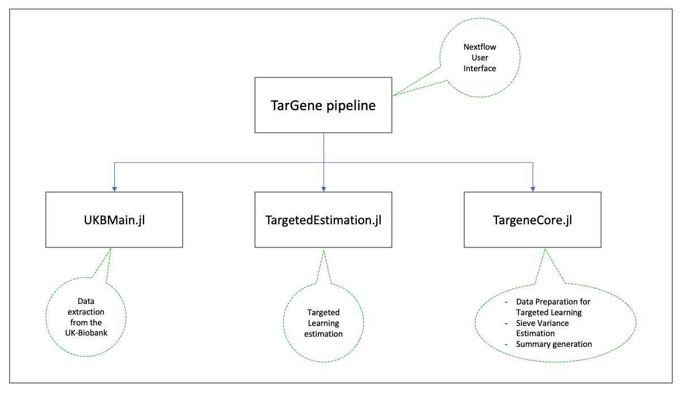

Project Organization
The TarGene project is organized around the targene-pipeline repository which contains the Nextflow pipeline which will be the entry-point for most users. However, this repository does not contain the executables that are used by the Nextflow processes. Those executables originate from additional repositories:
The following diagram presents a high level perspective of the project's organization.
